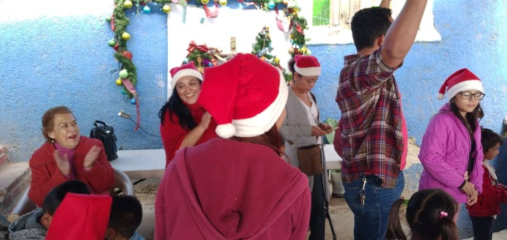
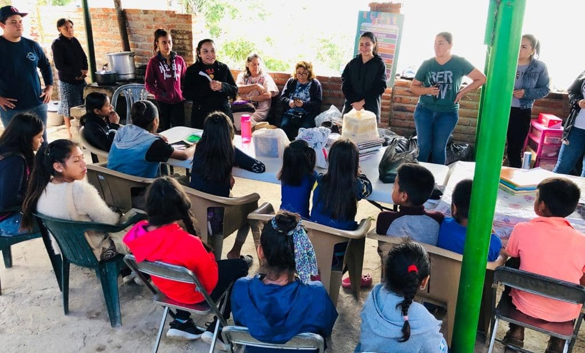

<link type="text/css" rel="stylesheet" href="./css/style.css">
<link type="text/css" rel="stylesheet" href="./css/light-box.min.css">
<script type="text/javascript" src="./lightbox-plus-jquery.min.js"></script>

<style>
    * {
        margin: -3.1% auto;
        padding: 0;
        box-sizing: border-box;
    }


    .historia .tit-evento {
        color: rgb(56, 6, 6);
    }

    .historia p {
        font-family: 'Nunito';
        font-weight: 800;
    }

    .item img:hover {
        filter:drop-shadow(6px 6px 5px brown);
        transition: 0.2s;
        transform: scale(1.03);
    }

</style>

    <section id="project">

        <div class="container3">

            <div class="evento5">
                <div class="historia">
                    <h1 class="tit-evento">Celebración Navideña</h1>
                    <p>
                        Cerramos el 2020 con un evento de Celebración a la familia de la comunidad de Chalpicote; junto con los vecinos y los hijos de don Epifanio tuvimos una excelente convivencia. <br><br>No podían faltar los deliciosos tamales hondureños muy tradicionales en esas fechas y una cena de gala con nuestros hermanos de JUCUM Guadalajara.
                    </p>
                </div>

                <div class="fotos">
                    <div class="item level-1">
                        <a href="./images/Evento1/IMG-20201206-WA0003.jpg" data-lightbox="mygallery"></a>
                        <a href="./images/Evento1/IMG-20201206-WA0008.jpg" data-lightbox="mygallery"></a>
                        <a href="./images/Evento1/IMG-20201224-WA0008.jpg" data-lightbox="mygallery"></a>
                    </div>
                    <div class="item level-2">
                        <a href="./images/Evento1/IMG-20201206-WA0004.jpg" data-lightbox="mygallery"></a>
                        <a href="./images/Evento1/IMG-20201223-WA0025.jpg" data-lightbox="mygallery"></a>
                     </div>
                    <div class="item level-3">
                        <a href="./images/Evento1/IMG-20201206-WA0011.jpg" data-lightbox="mygallery"></a>
                        <a href="./images/Evento1/IMG-20201206-WA0006.jpg" data-lightbox="mygallery"></a>
                    </div>
                    <div class="item level-4">
                        <a href="./images/Evento1/IMG-20201206-WA0007.jpg" data-lightbox="mygallery"></a>
                    </div>
                </div>
            </div>


            <div class="evento4">
                <div class="historia">
                    <h1 class="tit-evento">Clausura Clases De Reforzamiento</h1>
                    <p>
                        Junto al equipo de CORAM DEO y JUCUM Guadalajara, Sandra dirigió el proyecto semilla "Reforzamiento en Matemáticas y Español". Dirigido a los niños de la comunidad de Chalpicote, Poncitlán; con el fin de ayudarles en esas materías, en vista que por la pandemia quedaron en el olvido de las autoridades de educación. <br><br>Dios puso en nuestros corazones el deseo de ayudarles lo más posible para que culminaran su año educativo con mejores resultados.
                    </p>
                </div>

                <div class="fotos">
                    <div class="item level-1">
                        <a href="./images/Evento2/20201025_100558.jpg" data-lightbox="mygallery"></a>
                    </div>
                    <div class="item level-2">
                        <a href="./images/Evento2/20201025_130623.jpg" data-lightbox="mygallery"></a>
                        <a href="./images/Evento2/20201025_130726.jpg" data-lightbox="mygallery"></a>
                        <a href="./images/Evento2/IMG-20201025-WA0015.jpg" data-lightbox="mygallery"></a>
                        <a href="./images/Evento2/20201011_122253.jpg" data-lightbox="mygallery"></a>
                    </div>
                    <div class="item level-3">
                        <a href="./images/Evento2/20201011_114004.jpg" data-lightbox="mygallery"></a>
                        <a href="./images/Evento2/20201018_113403.jpg" data-lightbox="mygallery"></a>
                        
                    </div>
                    <div class="item level-4">
                        <a href="./images/Evento2/20201018_112549.jpg" data-lightbox="mygallery"></a>
                    </div>
                </div>
            </div>


            <div class="evento3">
                <div class="historia">
                    <h1 class="tit-evento">Compartiendo las buenas noticas de Salvación</h1>
                    <p>
                        Don Epifanio Santiago y su gran familia conformada por 14 hijos, nos abrieron las puertas de su casa para compartirles la Palabra de Dios. Agradecidos con nuestro Señor por poner en sus corazones el deseo ferviente de conocer más acerca del camino y poder entender más La Biblia.
                    </p>
                </div>

                <div class="fotos">
                    <div class="item level-1">
                        <a href="./images/Evento3/20201025_124205.jpg" data-lightbox="mygallery"></a>
                    </div>
                    <div class="item level-2">
                        <a href="./images/Evento3/20201018_144807.jpg" data-lightbox="mygallery"></a>
                        <a href="./images/Evento3/20201025_124214_mfnr.jpg" data-lightbox="mygallery"></a>
                        <a href="./images/Evento3/20201025_124312.jpg" data-lightbox="mygallery"></a>
                        <a href="./images/Evento3/20201018_150741.jpg" data-lightbox="mygallery"></a>
                    </div>
                    <div class="item level-3">
                        <a href="./images/Evento3/20201025_124319.jpg" data-lightbox="mygallery"></a>
                    </div>
                </div>
            </div>            


            <div class="evento2">
                <div class="historia">
                    <h1 class="tit-evento">Participación en el Evento CORAM DEO</h1>
                    <p>
                        En compañía de la iglesia de Queretaro que dirigen los pastores Dany y Carminda Pineda, participamos en la capacitación para líderes en las instalaciones de JUCUM Guadalajara.
                    </p>
                </div>

                <div class="fotos">
                    <div class="item level-1">
                        <a href="./images/Evento4/20200926_150452.jpg" data-lightbox="mygallery"></a>
                        <a href="./images/Evento4/20200925_163517.jpg" data-lightbox="mygallery"></a>
                        <a href="./images/Evento4/IMG-20200912-WA0002.jpg" data-lightbox="mygallery"></a>
                        <a href="./images/Evento4/IMG-20200731-WA0025.jpg" data-lightbox="mygallery"></a>
                    </div>
                    <div class="item level-2">
                        <a href="./images/Evento4/20200925_194607_mfnr.jpg" data-lightbox="mygallery"></a>
                        <a href="./images/Evento4/20200926_112552.jpg" data-lightbox="mygallery"></a>
                        <a href="./images/Evento4/20200926_082442.jpg" data-lightbox="mygallery"></a>
                    </div>
                    <div class="item level-3">
                        <a href="./images/Evento4/20200812_112657.jpg" data-lightbox="mygallery"></a>
                        <a href="./images/Evento4/IMG-20200928-WA0006.jpg" data-lightbox="mygallery"></a>
                    </div>
                    <div class="item level-4">
                        <a href="./images/Evento4/20200913_135521.jpg" data-lightbox="mygallery"></a>
                    </div>
                </div>
            </div>            


            <div class="evento1">
                <div class="historia">
                    <h1 class="tit-evento">Construcción de habitación para las princesas</h1>
                    <p>
                        Juventino de la comunidad de Chalpicote, Poncitlán, es un agricultor con una familia de 5 hijos, 3 son niñas; y ya están en edad de la pubertad. Todos dormían en una sola habitación, y un grupo de hermanos con la gestión de los fondos por parte de JUCUM Guadalajara, nos unimos en apoyo a esta familia para construirle la habitación a sus princesas. Tanto nosotros como Juventino y sus hermanos trabajando en equipo logramos en 2 días terminar la habitación. <br>Fue una experiencia extraordinaria!
                    </p>
                </div>

                <div class="fotos">
                    <div class="item level-1">
                        <a href="./images/Evento5/IMG-20200914-WA0015.jpg" data-lightbox="mygallery"></a>
                        <a href="./images/Evento5/IMG-20200914-WA0000.jpg" data-lightbox="mygallery"></a>
                        <a href="./images/Evento5/20200906_173222.jpg" data-lightbox="mygallery"></a>
                    </div>
                    <div class="item level-2">
                        <a href="./images/Evento5/20200906_181046.jpg" data-lightbox="mygallery"></a>
                        <a href="./images/Evento5/20200906_161257.jpg" data-lightbox="mygallery"></a>
                    </div>
                    <div class="item level-3">
                        <a href="./images/Evento5/IMG-20200914-WA0005.jpg" data-lightbox="mygallery"></a>
                        <a href="./images/Evento5/IMG-20200914-WA0014.jpg" data-lightbox="mygallery"></a>
                    </div>
                    <div class="item level-4">
                        <a href="./images/Evento5/IMG-20200914-WA0024.jpg" data-lightbox="mygallery"></a>
                        <a href="./images/Evento5/20200920_103322.jpg" data-lightbox="mygallery"></a>
                    </div>
                </div>
            </div>            

        </div>

        <div class="clear"></div>
    </section>
